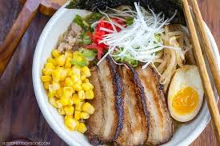
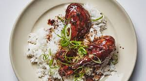
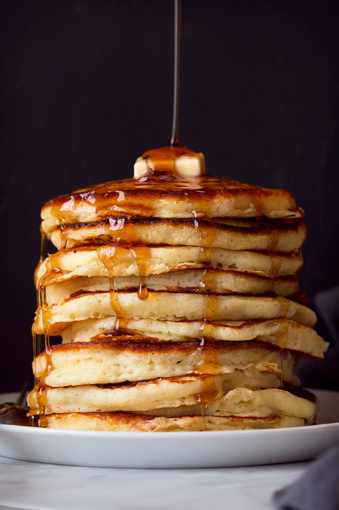
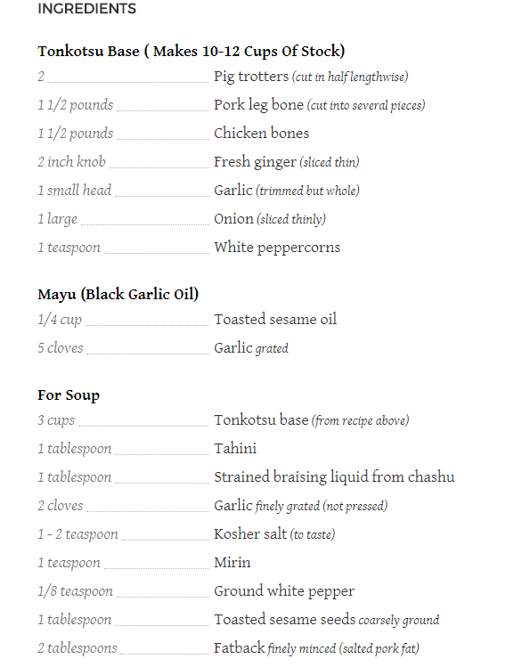
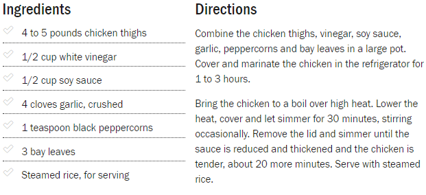
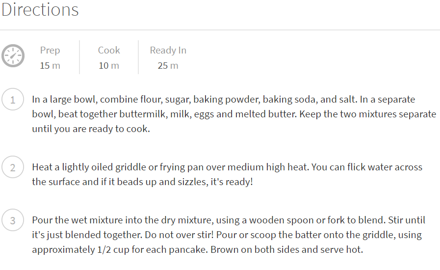

The Great Noodles
Recipe is Below for Tonkatsu Ramen, A salty but tasteful broth accompanied by juice noodles.

Steak!
Recipe is Below. A Juicy sweet and delectable main course

Adobo
Traditional recipe is below. A sweet and sour cuisine blanced by soy sauce and bay leaves for aroma

Buttermilk Pancakes
Recipe is below, fluffy and kind of creamy pancakes that is perfect for any time of the day!

Recipe for Ramen

Steak Recipe

Adobo Recipe
